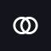
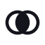

Logo concepts
Five ways to draw
between.
Namzilabs · September 2026
Recommended: 01 Between
01 · Recommended
Between
Two tools, one overlap: the blue lens is the number between them.
02
Converge
Many sources run in; one number comes out.
03
Receipt
Every number shows its working, with the total in blue.
04
Bridge
An n that stands on two tools and spans them.
05
Merge
Today's two dots, touching: two records, one person.
Logo concepts · round two
Five more, one with a
face.
Namzilabs · September 2026
Primary stays 01 Between · 06 is its social twin
06 · Social twin
Namzi
The mascot's face: the lens from 01, looking back at you.
07
Hash
# is the number; the blue is the space between the lines.
08
Wire
A flow wire from a tool to the answer, bent into a Z.
09
Pillars
An N: two tools apart, and the line that connects them.
10
Tittle
Lowercase, with the Between mark as the dot on the i.
01 · Primary mark · mono
Between,
open.
Two tools as two rings, overlapping, in one colour, with the space between them left empty. It sits on blue, ink, sky or paper and holds at 24px.
Eclipse · the bold alternate
As a profile picture at 160, 64, 40 and 24px, in four colourways

Namzilabs
@namzilabs · 2h
All your data, one place. Say hi to the new mark.


As an avatar at 160, 64, 40 and 24px, and in a timeline
Namzilabs
@namzilabs · 2h
Your best metrics live between your tools. We read them together.